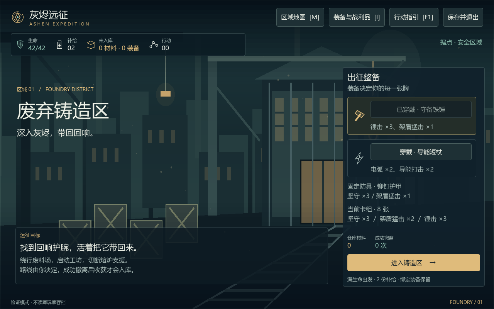
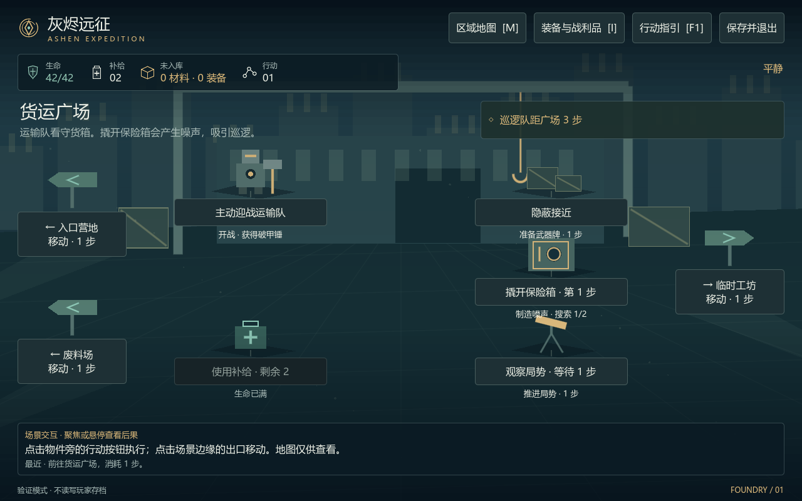
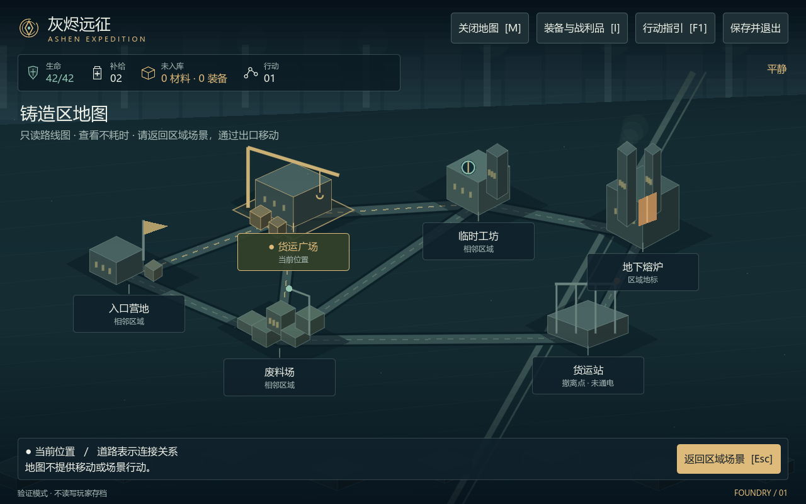
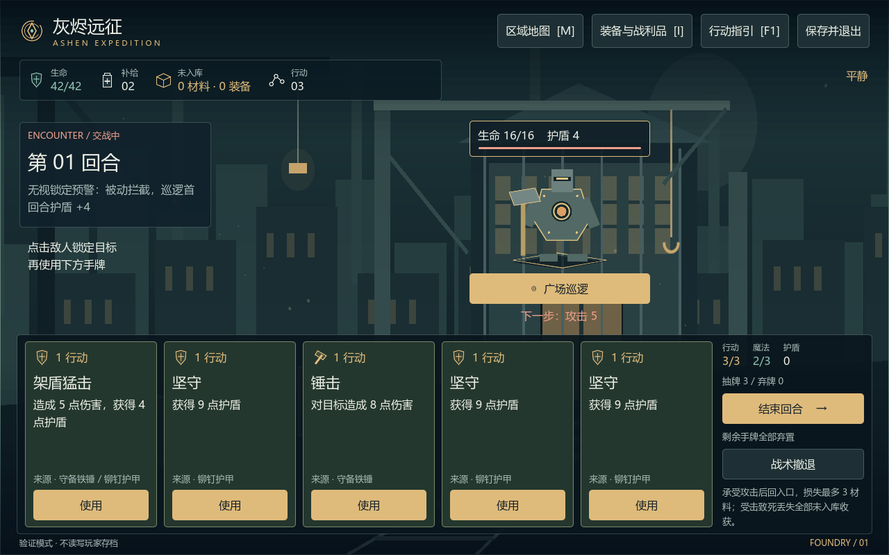
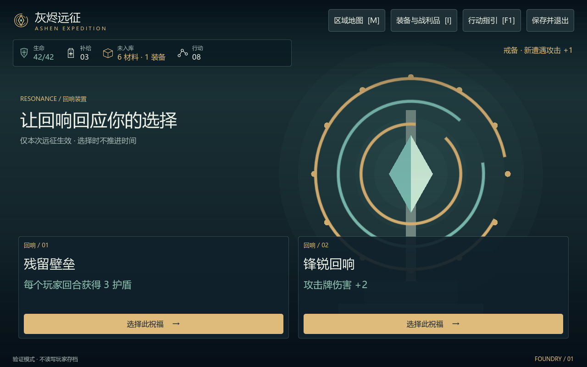
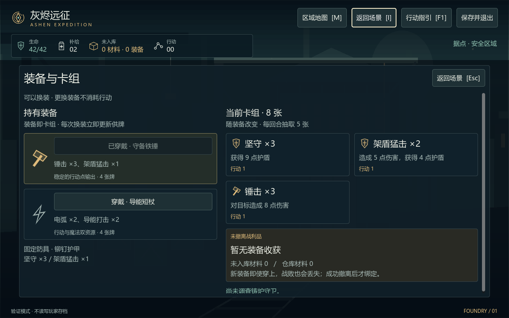
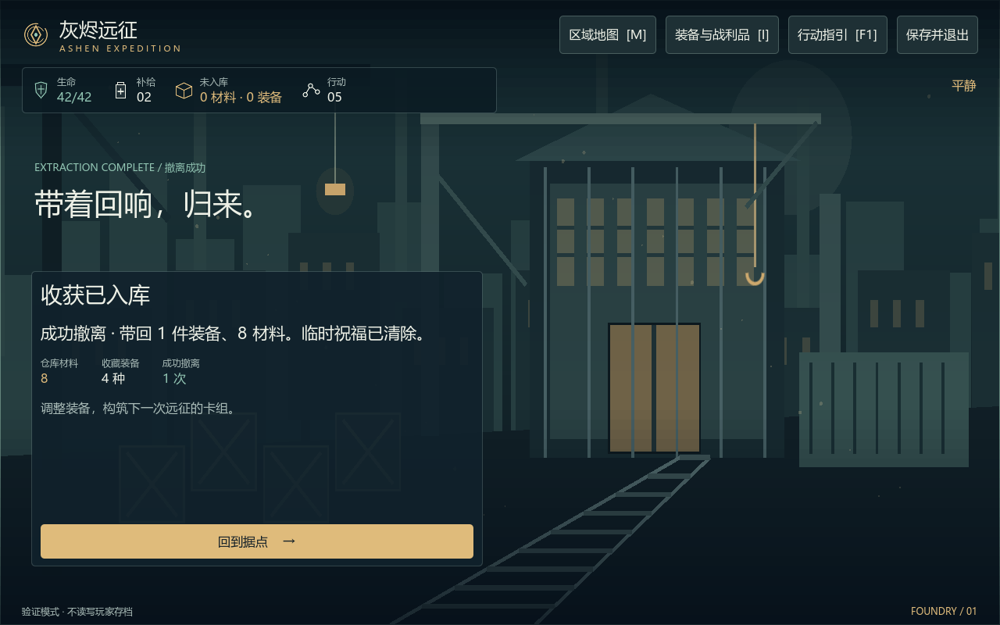
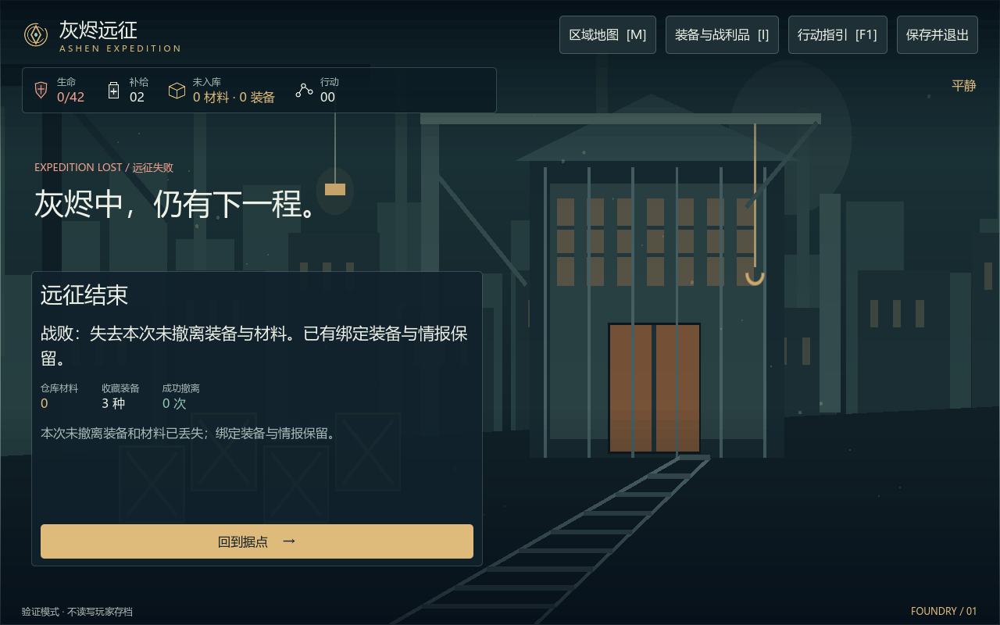
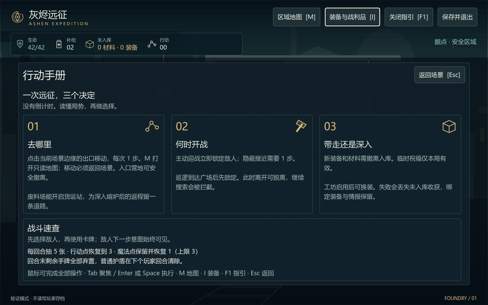

01 / 据点整备
全景场景上叠加目标与整备 HUD，出征按钮固定在面板底部。

02 / 单区域行动
只显示当前区域，点击物件旁的行为执行，通过场景边缘出口前往相邻区域。没有右侧行动栏。

地图 / 只读路线总览
M 打开地图，点击地标不会移动或扣步；返回场景后从出口移动。

03 / 卡牌战斗
点击角色或名称选敌，生命与意图悬浮在角色附近；手牌及操作固定在底部。

04 / 回响祝福
回响装置铺满场景，两个祝福选项并列悬浮在底部。

05 / 装备与卡组
装备覆盖层保留场景背景，长收藏在层内滚动，关闭按钮固定。

06 / 撤离结算
结算 HUD 悬浮于场景之上，突出收获已入库与返回据点。

06 / 战败结算
明确损失未入库收获，绑定装备和永久情报保留。

07 / 行动指引
手册覆盖层集中展示三个决定与战斗速查，支持 F1 打开、Esc 返回。